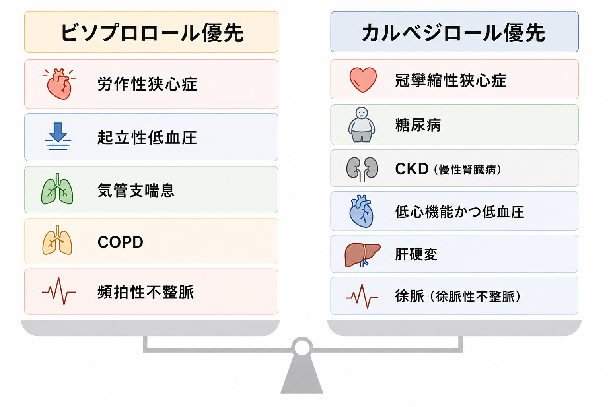

✔️βblocker
カルベジロールは1.25mg/day，ビソプロロールは0.625mg/dayから開始．
（入院中）3-5日，（外来）2-4週間毎に2倍量を目安に漸増．入院中にMax量を目指したい．
目標はカルベジロール20mg/day，ビソプロロール5mg/day．
洞調律，HR 60以上で増量可能と考える．
長期にβblockerを内服している状態で心不全増悪した場合は中止減量しない．
心原性ショックでも強心薬を使用して継続を検討．
cAVBでは中止する．

心拍数低下効果はビソプロロールの方が高い．
重症心不全ではカルベジロールで細かな用量調節を行う．
✔️ACEi/ARB,ARNI
ACEiは冠動脈疾患イベントに対する血圧非依存性効果が認められ，心不全患者への優位性あり．
ARBは乾性咳嗽の副作用が少なく，ACEiで咳嗽が出現した場合はARBに変更する．
ACEi(エナラプリル)は2.5mg/dayから開始，可能な限り高用量(10mg/day)へ．
→血圧低下効果は低め...?
ACEiの最終内服から36時間以上経過していればARNIに積極的に変更．
50mgX2(100mg/day)から開始，目標は400mg/day．
✔️MRA
スピロノラクトンは25mg/dayから開始，目標は50mg/day．
エプレレノンも同様に25mg/dayから開始，目標は50mg/day．
薬価的にスピロノラクトン優先．女性化乳房の副作用が出現した場合はエプレレノンに変更．
ACEi,ARB,MRAの3剤併用は腎機能低下，血清K上昇のリスクがあるため注意．
K>5.5なら半量に減量，K>6.0なら中止．
✔️SGLT2i
☆HEpEFにも適応あり．
10mg/dayから開始，腎機能低下で使用中止も．
シックデイではケトアシドーシスをきたすため十分注意．